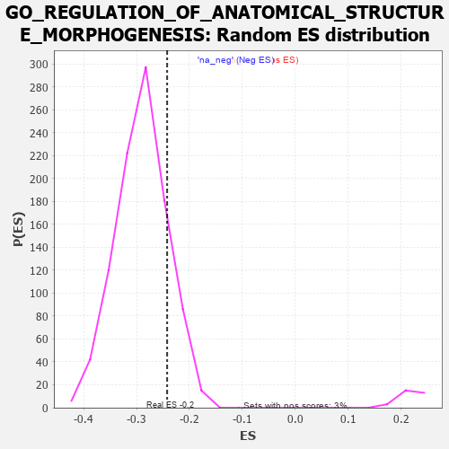

| | | Dataset | 7d |
| Phenotype | NoPhenotypeAvailable |
| Upregulated in class | na_neg |
| GeneSet | GO_REGULATION_OF_ANATOMICAL_STRUCTURE_MORPHOGENESIS |
| Enrichment Score (ES) | -0.24220678 |
| Normalized Enrichment Score (NES) | -0.8348636 |
| Nominal p-value | 0.84210527 |
| FDR q-value | 0.9809971 |
| FWER p-Value | 1.0 |
Table: GSEA Results Summary
 Fig 1: Enrichment plot: GO_REGULATION_OF_ANATOMICAL_STRUCTURE_MORPHOGENESIS
Fig 1: Enrichment plot: GO_REGULATION_OF_ANATOMICAL_STRUCTURE_MORPHOGENESIS
Profile of the Running ES Score & Positions of GeneSet Members on the Rank Ordered List
| PROBE | GENE SYMBOL | GENE_TITLE | RANK IN GENE LIST | RANK METRIC SCORE | RUNNING ES | CORE ENRICHMENT | | 1 | SYT2 | | | 8 | 5.577 | 0.0499 | No |
| 2 | SIX2 | | | 40 | 3.152 | 0.0747 | No |
| 3 | RAC2 | | | 60 | 2.442 | 0.0945 | No |
| 4 | RHOU | | | 210 | 1.031 | 0.0847 | No |
| 5 | RHOH | | | 228 | 0.987 | 0.0915 | No |
| 6 | HGF | | | 276 | 0.870 | 0.0934 | No |
| 7 | SHOX2 | | | 288 | 0.842 | 0.0996 | No |
| 8 | DLL1 | | | 337 | 0.760 | 0.1004 | No |
| 9 | BAX | | | 387 | 0.711 | 0.1005 | No |
| 10 | LRP1 | | | 470 | 0.648 | 0.0959 | No |
| 11 | ZMYM3 | | | 475 | 0.646 | 0.1012 | No |
| 12 | MYOD1 | | | 504 | 0.628 | 0.1034 | No |
| 13 | PKN1 | | | 535 | 0.619 | 0.1051 | No |
| 14 | SRF | | | 542 | 0.615 | 0.1100 | No |
| 15 | FBXW8 | | | 601 | 0.594 | 0.1079 | No |
| 16 | HES5 | | | 661 | 0.571 | 0.1055 | No |
| 17 | VASH1 | | | 712 | 0.556 | 0.1041 | No |
| 18 | ID1 | | | 719 | 0.555 | 0.1084 | No |
| 19 | HDAC5 | | | 900 | 0.506 | 0.0898 | No |
| 20 | STOX1 | | | 905 | 0.506 | 0.0939 | No |
| 21 | DVL3 | | | 971 | 0.490 | 0.0900 | No |
| 22 | MEF2C | | | 1054 | 0.473 | 0.0837 | No |
| 23 | SRC | | | 1128 | 0.459 | 0.0785 | No |
| 24 | PSMD7 | | | 1152 | 0.454 | 0.0796 | No |
| 25 | GAB1 | | | 1158 | 0.453 | 0.0831 | No |
| 26 | PSMD2 | | | 1181 | 0.450 | 0.0844 | No |
| 27 | WDR36 | | | 1260 | 0.437 | 0.0783 | No |
| 28 | CARM1 | | | 1413 | 0.408 | 0.0624 | No |
| 29 | P2RY1 | | | 1416 | 0.407 | 0.0658 | No |
| 30 | IFRD1 | | | 1486 | 0.392 | 0.0605 | No |
| 31 | DDHD2 | | | 1557 | 0.381 | 0.0550 | No |
| 32 | FZD1 | | | 1574 | 0.379 | 0.0564 | No |
| 33 | RNF6 | | | 1605 | 0.373 | 0.0559 | No |
| 34 | RXRA | | | 1647 | 0.365 | 0.0539 | No |
| 35 | TRAK1 | | | 1714 | 0.354 | 0.0486 | No |
| 36 | AGO2 | | | 1767 | 0.343 | 0.0450 | No |
| 37 | PSMD4 | | | 1811 | 0.335 | 0.0426 | No |
| 38 | ABR | | | 1812 | 0.335 | 0.0456 | No |
| 39 | GATA4 | | | 1837 | 0.330 | 0.0455 | No |
| 40 | AP2S1 | | | 1846 | 0.329 | 0.0475 | No |
| 41 | PSMD6 | | | 1858 | 0.326 | 0.0490 | No |
| 42 | SMAD4 | | | 1860 | 0.326 | 0.0519 | No |
| 43 | PAK3 | | | 1889 | 0.322 | 0.0512 | No |
| 44 | FMNL2 | | | 1946 | 0.314 | 0.0468 | No |
| 45 | BRSK2 | | | 1979 | 0.308 | 0.0455 | No |
| 46 | ROR1 | | | 1993 | 0.306 | 0.0466 | No |
| 47 | FOXO4 | | | 2004 | 0.304 | 0.0481 | No |
| 48 | BMP7 | | | 2107 | 0.290 | 0.0376 | No |
| 49 | ISLR2 | | | 2124 | 0.287 | 0.0381 | No |
| 50 | PSME4 | | | 2143 | 0.285 | 0.0384 | No |
| 51 | C1QBP | | | 2189 | 0.278 | 0.0352 | No |
| 52 | WTIP | | | 2228 | 0.272 | 0.0327 | No |
| 53 | PSMF1 | | | 2251 | 0.268 | 0.0323 | No |
| 54 | SIN3A | | | 2361 | 0.251 | 0.0205 | No |
| 55 | HIPK2 | | | 2389 | 0.247 | 0.0193 | No |
| 56 | OMA1 | | | 2408 | 0.244 | 0.0192 | No |
| 57 | HUWE1 | | | 2506 | 0.225 | 0.0087 | No |
| 58 | PSMD5 | | | 2560 | 0.218 | 0.0039 | No |
| 59 | EMC10 | | | 2607 | 0.211 | -0.0001 | No |
| 60 | SASH1 | | | 2682 | 0.201 | -0.0078 | No |
| 61 | DSCAM | | | 2689 | 0.200 | -0.0068 | No |
| 62 | PHB2 | | | 2712 | 0.197 | -0.0078 | No |
| 63 | SLIT2 | | | 2724 | 0.195 | -0.0075 | No |
| 64 | NR2E1 | | | 2844 | 0.177 | -0.0212 | No |
| 65 | DAPK3 | | | 2880 | 0.169 | -0.0242 | No |
| 66 | FGFR2 | | | 2895 | 0.167 | -0.0245 | No |
| 67 | AGGF1 | | | 2911 | 0.164 | -0.0249 | No |
| 68 | ACVR1 | | | 2932 | 0.161 | -0.0260 | No |
| 69 | RNH1 | | | 2977 | 0.153 | -0.0303 | No |
| 70 | WNT4 | | | 3023 | 0.146 | -0.0348 | No |
| 71 | MAP2 | | | 3074 | 0.140 | -0.0400 | No |
| 72 | RREB1 | | | 3099 | 0.137 | -0.0418 | No |
| 73 | BTBD7 | | | 3143 | 0.131 | -0.0462 | No |
| 74 | SFRP5 | | | 3154 | 0.129 | -0.0463 | No |
| 75 | PSMD9 | | | 3179 | 0.125 | -0.0482 | No |
| 76 | CFDP1 | | | 3332 | 0.099 | -0.0670 | No |
| 77 | SMAD1 | | | 3337 | 0.099 | -0.0666 | No |
| 78 | GAS2 | | | 3392 | 0.090 | -0.0727 | No |
| 79 | MED1 | | | 3405 | 0.089 | -0.0735 | No |
| 80 | KIF1A | | | 3415 | 0.088 | -0.0738 | No |
| 81 | SARM1 | | | 3432 | 0.086 | -0.0751 | No |
| 82 | AP2A2 | | | 3433 | 0.085 | -0.0743 | No |
| 83 | HGS | | | 3476 | 0.080 | -0.0790 | No |
| 84 | CDK5 | | | 3480 | 0.080 | -0.0787 | No |
| 85 | GLI1 | | | 3489 | 0.079 | -0.0790 | No |
| 86 | FES | | | 3501 | 0.077 | -0.0797 | No |
| 87 | PQBP1 | | | 3526 | 0.072 | -0.0821 | No |
| 88 | STK25 | | | 3602 | 0.059 | -0.0913 | No |
| 89 | FIS1 | | | 3654 | 0.051 | -0.0974 | No |
| 90 | EPN2 | | | 3691 | 0.045 | -0.1017 | No |
| 91 | NF1 | | | 3713 | 0.040 | -0.1040 | No |
| 92 | FMNL3 | | | 3739 | 0.036 | -0.1069 | No |
| 93 | GPC6 | | | 3950 | 0.002 | -0.1340 | No |
| 94 | EYA1 | | | 3987 | -0.006 | -0.1386 | No |
| 95 | VPS35 | | | 3989 | -0.006 | -0.1387 | No |
| 96 | DDAH1 | | | 4056 | -0.016 | -0.1470 | No |
| 97 | SFRP2 | | | 4065 | -0.018 | -0.1479 | No |
| 98 | ROBO2 | | | 4066 | -0.018 | -0.1477 | No |
| 99 | CSF1 | | | 4074 | -0.019 | -0.1485 | No |
| 100 | WNT2 | | | 4084 | -0.021 | -0.1494 | No |
| 101 | MTOR | | | 4114 | -0.025 | -0.1530 | No |
| 102 | ABL1 | | | 4125 | -0.027 | -0.1540 | No |
| 103 | CRK | | | 4139 | -0.031 | -0.1554 | No |
| 104 | HNF4A | | | 4157 | -0.034 | -0.1573 | No |
| 105 | AP2B1 | | | 4185 | -0.039 | -0.1604 | No |
| 106 | ARPC2 | | | 4232 | -0.047 | -0.1659 | No |
| 107 | PSME3 | | | 4280 | -0.056 | -0.1715 | No |
| 108 | WNT11 | | | 4282 | -0.056 | -0.1711 | No |
| 109 | TBX2 | | | 4303 | -0.060 | -0.1731 | No |
| 110 | SYT17 | | | 4310 | -0.061 | -0.1733 | No |
| 111 | OPA1 | | | 4330 | -0.065 | -0.1752 | No |
| 112 | MYDGF | | | 4429 | -0.081 | -0.1871 | No |
| 113 | LRRK2 | | | 4467 | -0.087 | -0.1911 | No |
| 114 | EPS8 | | | 4474 | -0.088 | -0.1911 | No |
| 115 | ILK | | | 4510 | -0.096 | -0.1947 | No |
| 116 | RIN2 | | | 4535 | -0.101 | -0.1969 | No |
| 117 | NTRK2 | | | 4543 | -0.104 | -0.1968 | No |
| 118 | ABI2 | | | 4554 | -0.106 | -0.1972 | No |
| 119 | CMA1 | | | 4580 | -0.114 | -0.1993 | No |
| 120 | SYT4 | | | 4590 | -0.116 | -0.1994 | No |
| 121 | GATA3 | | | 4614 | -0.120 | -0.2013 | No |
| 122 | RAB21 | | | 4620 | -0.122 | -0.2008 | No |
| 123 | LIMK1 | | | 4684 | -0.136 | -0.2077 | No |
| 124 | PTK7 | | | 4687 | -0.136 | -0.2068 | No |
| 125 | WASF3 | | | 4730 | -0.145 | -0.2109 | No |
| 126 | FBLN1 | | | 4748 | -0.149 | -0.2117 | No |
| 127 | PLCG1 | | | 4770 | -0.151 | -0.2130 | No |
| 128 | PIM1 | | | 4776 | -0.152 | -0.2123 | No |
| 129 | RTN4 | | | 4783 | -0.154 | -0.2116 | No |
| 130 | PLD6 | | | 4799 | -0.157 | -0.2122 | No |
| 131 | TERT | | | 4801 | -0.157 | -0.2108 | No |
| 132 | TNIK | | | 4804 | -0.158 | -0.2097 | No |
| 133 | FBXW7 | | | 4816 | -0.161 | -0.2096 | No |
| 134 | WDR1 | | | 4824 | -0.163 | -0.2090 | No |
| 135 | DLG1 | | | 4860 | -0.169 | -0.2120 | No |
| 136 | MARK2 | | | 4899 | -0.177 | -0.2153 | No |
| 137 | CAPZB | | | 4908 | -0.179 | -0.2147 | No |
| 138 | FZD4 | | | 4940 | -0.186 | -0.2170 | No |
| 139 | ADCK1 | | | 4953 | -0.188 | -0.2168 | No |
| 140 | PRKDC | | | 4955 | -0.189 | -0.2152 | No |
| 141 | ARAP1 | | | 4963 | -0.191 | -0.2144 | No |
| 142 | KLF4 | | | 5005 | -0.198 | -0.2179 | No |
| 143 | PDPK1 | | | 5043 | -0.207 | -0.2208 | No |
| 144 | TBX1 | | | 5166 | -0.241 | -0.2343 | No |
| 145 | PARVA | | | 5187 | -0.245 | -0.2347 | No |
| 146 | SMO | | | 5195 | -0.247 | -0.2333 | No |
| 147 | GPR4 | | | 5219 | -0.250 | -0.2340 | No |
| 148 | KRIT1 | | | 5248 | -0.257 | -0.2353 | No |
| 149 | FOXJ2 | | | 5249 | -0.257 | -0.2329 | No |
| 150 | PTEN | | | 5262 | -0.261 | -0.2321 | No |
| 151 | RIMS2 | | | 5272 | -0.265 | -0.2308 | No |
| 152 | EPHA4 | | | 5273 | -0.265 | -0.2284 | No |
| 153 | MAGI2 | | | 5295 | -0.269 | -0.2287 | No |
| 154 | EPN1 | | | 5304 | -0.272 | -0.2272 | No |
| 155 | EPHA1 | | | 5349 | -0.285 | -0.2303 | No |
| 156 | CPNE9 | | | 5374 | -0.289 | -0.2307 | No |
| 157 | GRIN1 | | | 5381 | -0.291 | -0.2289 | No |
| 158 | FZD5 | | | 5386 | -0.292 | -0.2267 | No |
| 159 | DLG4 | | | 5388 | -0.293 | -0.2242 | No |
| 160 | SOX8 | | | 5404 | -0.296 | -0.2234 | No |
| 161 | CUX1 | | | 5437 | -0.304 | -0.2248 | No |
| 162 | IST1 | | | 5442 | -0.305 | -0.2225 | No |
| 163 | VDR | | | 5517 | -0.325 | -0.2291 | No |
| 164 | FGFR1 | | | 5543 | -0.332 | -0.2293 | No |
| 165 | EHD1 | | | 5560 | -0.336 | -0.2283 | No |
| 166 | SPHK1 | | | 5576 | -0.339 | -0.2271 | No |
| 167 | ROR2 | | | 5626 | -0.353 | -0.2302 | No |
| 168 | WNK1 | | | 5650 | -0.362 | -0.2299 | No |
| 169 | DNMBP | | | 5651 | -0.362 | -0.2266 | No |
| 170 | PSMD1 | | | 5674 | -0.367 | -0.2261 | No |
| 171 | PDCL3 | | | 5738 | -0.388 | -0.2307 | No |
| 172 | VAMP7 | | | 5777 | -0.399 | -0.2319 | No |
| 173 | TRPC6 | | | 5784 | -0.401 | -0.2290 | No |
| 174 | ADA | | | 5798 | -0.405 | -0.2270 | No |
| 175 | ANXA7 | | | 5827 | -0.413 | -0.2269 | No |
| 176 | DOCK1 | | | 5908 | -0.438 | -0.2332 | No |
| 177 | STK11 | | | 5922 | -0.443 | -0.2308 | No |
| 178 | XBP1 | | | 6011 | -0.475 | -0.2379 | Yes |
| 179 | RAC1 | | | 6036 | -0.484 | -0.2365 | Yes |
| 180 | JAG1 | | | 6060 | -0.494 | -0.2350 | Yes |
| 181 | CALR | | | 6077 | -0.499 | -0.2325 | Yes |
| 182 | DBNL | | | 6084 | -0.501 | -0.2287 | Yes |
| 183 | FEZF2 | | | 6150 | -0.519 | -0.2324 | Yes |
| 184 | ROCK1 | | | 6152 | -0.520 | -0.2278 | Yes |
| 185 | PARVB | | | 6168 | -0.528 | -0.2249 | Yes |
| 186 | STIM1 | | | 6169 | -0.528 | -0.2201 | Yes |
| 187 | THRB | | | 6178 | -0.531 | -0.2163 | Yes |
| 188 | KLF2 | | | 6182 | -0.532 | -0.2118 | Yes |
| 189 | TPM1 | | | 6226 | -0.545 | -0.2124 | Yes |
| 190 | CDC42 | | | 6236 | -0.548 | -0.2085 | Yes |
| 191 | FLOT1 | | | 6276 | -0.564 | -0.2084 | Yes |
| 192 | CDKL3 | | | 6401 | -0.618 | -0.2188 | Yes |
| 193 | PTPRD | | | 6423 | -0.629 | -0.2157 | Yes |
| 194 | KANK1 | | | 6536 | -0.678 | -0.2240 | Yes |
| 195 | ROBO1 | | | 6577 | -0.699 | -0.2228 | Yes |
| 196 | MKS1 | | | 6607 | -0.715 | -0.2200 | Yes |
| 197 | PTPRS | | | 6646 | -0.738 | -0.2182 | Yes |
| 198 | VASH2 | | | 6680 | -0.752 | -0.2156 | Yes |
| 199 | PAK1 | | | 6691 | -0.757 | -0.2100 | Yes |
| 200 | DMRT2 | | | 6718 | -0.768 | -0.2063 | Yes |
| 201 | GSK3B | | | 6719 | -0.768 | -0.1993 | Yes |
| 202 | ADAM9 | | | 6808 | -0.819 | -0.2032 | Yes |
| 203 | AHI1 | | | 6860 | -0.848 | -0.2020 | Yes |
| 204 | HEXB | | | 6894 | -0.864 | -0.1984 | Yes |
| 205 | LRP8 | | | 6931 | -0.889 | -0.1949 | Yes |
| 206 | GHSR | | | 6937 | -0.894 | -0.1874 | Yes |
| 207 | DNM1L | | | 6963 | -0.913 | -0.1823 | Yes |
| 208 | CCR2 | | | 7003 | -0.939 | -0.1788 | Yes |
| 209 | MYH10 | | | 7048 | -0.966 | -0.1756 | Yes |
| 210 | CPNE5 | | | 7070 | -0.977 | -0.1694 | Yes |
| 211 | RYK | | | 7102 | -1.000 | -0.1643 | Yes |
| 212 | SYT1 | | | 7148 | -1.033 | -0.1607 | Yes |
| 213 | AR | | | 7169 | -1.046 | -0.1537 | Yes |
| 214 | CIB1 | | | 7280 | -1.152 | -0.1574 | Yes |
| 215 | GRN | | | 7319 | -1.194 | -0.1514 | Yes |
| 216 | NGEF | | | 7335 | -1.209 | -0.1423 | Yes |
| 217 | CELA1 | | | 7399 | -1.265 | -0.1389 | Yes |
| 218 | LHX1 | | | 7431 | -1.305 | -0.1310 | Yes |
| 219 | DDHD1 | | | 7501 | -1.397 | -0.1271 | Yes |
| 220 | DCC | | | 7550 | -1.470 | -0.1199 | Yes |
| 221 | PDCD6 | | | 7630 | -1.615 | -0.1154 | Yes |
| 222 | MCU | | | 7644 | -1.637 | -0.1021 | Yes |
| 223 | ZMYM6 | | | 7738 | -1.870 | -0.0971 | Yes |
| 224 | SP1 | | | 7840 | -2.321 | -0.0889 | Yes |
| 225 | FYN | | | 7881 | -2.622 | -0.0701 | Yes |
| 226 | CAV3 | | | 7896 | -2.739 | -0.0469 | Yes |
| 227 | PSMD3 | | | 7907 | -2.887 | -0.0219 | Yes |
| 228 | PSMD8 | | | 7931 | -3.286 | 0.0052 | Yes |
Table: GSEA details [plain text format]

Fig 2: GO_REGULATION_OF_ANATOMICAL_STRUCTURE_MORPHOGENESIS: Random ES distribution
Gene set null distribution of ES for GO_REGULATION_OF_ANATOMICAL_STRUCTURE_MORPHOGENESIS